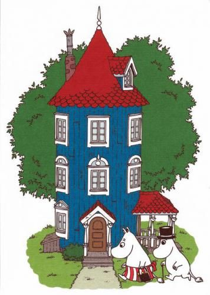

Рідна домівка мумі-тролів — блакитний будиночок, розташований у їхній долині.
Згідно з ранніми описами Янссон, він схожий на круглу в основі вежу,
пофарбовану в чорничний синій колір з червоним конічним дахом

Повернутися на головну сторінку